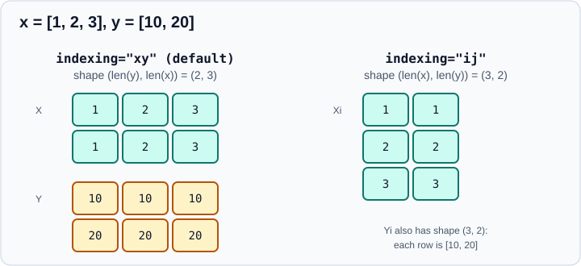

NumPy Ranges and Grids
|
This content was generated with the assistance of AI and should be verified against the official documentation before being relied on in production. |
Evaluating a function over a range of inputs, plotting a surface, sampling a parameter space and cutting data into
equal parts all start from the same building blocks: sequences of regularly spaced numbers and grids of coordinates.
This page explains arange, linspace, geomspace and logspace, the grid builders meshgrid, mgrid, ogrid,
indices and ix_, and the split functions. It targets NumPy 2.5 and was checked in October 2026.
Examples target Python 3.13 or 3.14 and were run on Python 3.13. The examples were run with NumPy 2.5.4 and the output shown is the real output.
Creating arrays from other sources is covered in Array Creation; splitting and joining arrays more generally is in Reshaping, Stacking and Splitting.
arange: a step you choose
import numpy as np
print(np.arange(5))
print(np.arange(2, 8))
print(np.arange(10, 0, -3))
print(np.arange(0, 1, 0.25))
print(np.arange(5, dtype=float))Output:
[0 1 2 3 4]
[2 3 4 5 6 7]
[10 7 4 1]
[0. 0.25 0.5 0.75]
[0. 1. 2. 3. 4.]Source: numpy.arange.
arange([start,] stop[, step], dtype=None) is the array version of Python’s range: it includes start, excludes
stop and takes steps of step, which may be negative. With one argument it counts from 0. The result has
ceil((stop - start) / step) elements, and the dtype is integer if all of start, stop and step are integers,
otherwise float64, unless you pass dtype.
The floating-point pitfall
With a float step the number of elements depends on rounding error, and the documentation warns against it:
import numpy as np
print(len(np.arange(0, 1, 0.1)))
print(np.arange(1, 1.3, 0.1))
print(np.arange(0.1, 0.4, 0.1).size)Output:
10
[1. 1.1 1.2 1.3]
4np.arange(1, 1.3, 0.1) includes 1.3, although stop is supposed to be excluded, and np.arange(0.1, 0.4, 0.1)
returns four values instead of three: 0.1 + 2 * 0.1 is 0.30000000000000004 and the computed length is rounded up.
The same call can also give different lengths on different inputs. The rule is simple: use arange with integer
arguments, and use linspace whenever the step is a float or whenever you care about the endpoint.
linspace: a number of points you choose
import numpy as np
print(np.linspace(0, 1, 5))
print(np.linspace(0, 1, 5, endpoint=False))
values, step = np.linspace(0, 1, 5, retstep=True)
print(step)
print(np.linspace([0, 10], [1, 20], 3))
print(np.linspace([0, 10], [1, 20], 3, axis=1).shape)
print(np.linspace(0, 10, 5, dtype=int))
print(np.linspace(0, 1, 1), np.linspace(0, 1, 0))Output:
[0. 0.25 0.5 0.75 1. ]
[0. 0.2 0.4 0.6 0.8]
0.25
[[ 0. 10. ]
[ 0.5 15. ]
[ 1. 20. ]]
(2, 3)
[ 0 2 5 7 10]
[0.] []Source: numpy.linspace.
linspace(start, stop, num=50, endpoint=True, retstep=False, dtype=None, axis=0) returns num evenly spaced samples.
Unlike arange, the endpoint is included by default (pass endpoint=False for a half-open interval) and the count is
exact, so no rounding can add or drop a point. Arguments to remember:
-
retstep=Truereturns the pair(samples, step). -
startandstopmay be arrays: the samples are then stacked alongaxis(0 by default), producing one range per pair. -
An integer
dtypetruncates the floats (np.linspace(0, 10, 5, dtype=int)gives0, 2, 5, 7, 10, not a rounded sequence); usenp.roundfirst if that is not what you want. -
num=1returns onlystart, andnum=0returns an empty array.
geomspace and logspace: multiplicative spacing
import numpy as np
print(np.geomspace(1, 1000, 4))
print(np.logspace(0, 3, 4))
print(np.logspace(0, 3, 4, base=2))
print(np.geomspace(1, 256, 9))
print(np.geomspace(-1, -100, 3))
try:
np.geomspace(0, 10, 3)
except ValueError as e:
print("ValueError:", e)Output:
[ 1. 10. 100. 1000.]
[ 1. 10. 100. 1000.]
[1. 2. 4. 8.]
[ 1. 2. 4. 8. 16. 32. 64. 128. 256.]
[ -1. -10. -100.]
ValueError: Geometric sequence cannot include zeroSource: numpy.geomspace and numpy.logspace.
Both give points equally spaced on a logarithmic scale, which is what learning rates, regularisation strengths and frequency axes usually need. The difference is the meaning of the arguments:
-
geomspace(start, stop, num)takes the actual endpoint values, sogeomspace(1, 1000, 4)is1, 10, 100, 1000. Neither endpoint can be zero and both must have the same sign. -
logspace(start, stop, num, base=10.0)takes exponents: it returnsbase ** linspace(start, stop, num).np.logspace(0, 3, 4)is the same sequence, andbase=2gives powers of two.
A typical use is a hyperparameter grid such as np.logspace(-4, 0, 5) for a regularisation strength.
meshgrid: coordinate matrices from coordinate vectors
Given the coordinates along each axis, meshgrid returns one array per axis holding that coordinate at every grid point.
import numpy as np
x = np.array([1, 2, 3])
y = np.array([10, 20])
X, Y = np.meshgrid(x, y)
print(X)
print(Y)
print(X.shape)
Xi, Yi = np.meshgrid(x, y, indexing="ij")
print(Xi.shape)
print(Xi)
Xs, Ys = np.meshgrid(x, y, sparse=True)
print(Xs.shape, Ys.shape)
print(Xs + Ys)Output:
[[1 2 3]
[1 2 3]]
[[10 10 10]
[20 20 20]]
(2, 3)
(3, 2)
[[1 1]
[2 2]
[3 3]]
(1, 3) (2, 1)
[[11 12 13]
[21 22 23]]Source: numpy.meshgrid and How to partition; the figure above is an original drawing based on these examples.
The two indexing conventions differ in which input runs along the rows:

The options that matter:
-
indexing="xy"(the default) uses Cartesian convention: for two inputs the output has shape(len(y), len(x)), soX[row, col]isx[col]andY[row, col]isy[row]. This is the layout Matplotlib’scontourfandplot_surfaceexpect. -
indexing="ij"uses matrix convention: the output has shape(len(x), len(y))andXi[i, j]isx[i]. Use it when the grid indexes an array, a table or a function of(i, j), and for three or more dimensions to keep a consistent axis order. -
sparse=Truereturns arrays of shapes(1, 3)and(2, 1)instead of full matrices. They broadcast against each other, soXs + Ysis the full result without allocating two dense arrays. This matters for large grids. -
copy=Falsereturns broadcast views instead of copies, which use little memory but are not meant to be written to: in NumPy 2.5np.shares_memory(Xc, x)isTrueand writing to the result is deprecated.
Evaluating a function on a grid
import numpy as np
t = np.linspace(-2, 2, 5)
gx, gy = np.meshgrid(t, t)
z = np.exp(-(gx**2 + gy**2))
print(z.shape)
print(z.round(2)[2])Output:
(5, 5)
[0.02 0.37 1. 0.37 0.02]Source: How to partition: meshgrid.
For plotting, pass gx, gy and z to ax.contourf or ax.plot_surface (see
Data Visualization). Meshgrid memory grows as the product of the axis
lengths, so a three-dimensional grid of 1000 points per axis does not fit in memory; use sparse=True and broadcasting.
mgrid, ogrid, indices and ix_
These are the compact alternatives that use slice notation. They are indexable objects, not functions.
import numpy as np
print(np.mgrid[0:3, 0:2])
print(np.mgrid[0:1:5j])
print(np.ogrid[0:3, 0:2])
print(np.indices((2, 3)))
print(np.ix_([0, 2], [1, 3]))Output:
[[[0 0]
[1 1]
[2 2]]
[[0 1]
[0 1]
[0 1]]]
[0. 0.25 0.5 0.75 1. ]
(array([[0],
[1],
[2]]), array([[0, 1]]))
[[[0 0 0]
[1 1 1]]
[[0 1 2]
[0 1 2]]]
(array([[0],
[2]]), array([[1, 3]]))Source: numpy.mgrid, numpy.ogrid, numpy.indices and numpy.ix_.
-
np.mgrid[a:b:c, ...]is a dense,ij-indexed grid. A complex step such as5jmeans "this many points, endpoint included", likelinspace; a real step works likearange, with the same floating-point caveats. -
np.ogrid[...]is the sparse (open) version ofmgrid. -
np.indices(shape)returns the index arrays of an array of that shape in a single(ndim, *shape)array. -
np.ix_(a, b)turns index vectors into open mesh indices for selecting the sub-gridarray[np.ix_(rows, cols)]; it is an indexing helper rather than a coordinate builder. It is explained in Advanced and Boolean Indexing. -
np.fromfunction(f, shape)evaluatesfon index grids, for examplelambda i, j: (i + j) % 2for a checkerboard.
Splitting into pieces
import numpy as np
print(np.array_split(np.arange(10), 3))
print(np.split(np.arange(6), [2, 3]))
a = np.arange(12).reshape(3, 4)
print(np.hsplit(a, 2))
print(np.vsplit(a, [1]))
try:
np.split(np.arange(10), 3)
except ValueError as e:
print("ValueError:", e)Output:
[array([0, 1, 2, 3]), array([4, 5, 6]), array([7, 8, 9])]
[array([0, 1]), array([2]), array([3, 4, 5])]
[array([[0, 1],
[4, 5],
[8, 9]]), array([[ 2, 3],
[ 6, 7],
[10, 11]])]
[array([[0, 1, 2, 3]]), array([[ 4, 5, 6, 7],
[ 8, 9, 10, 11]])]
ValueError: array split does not result in an equal divisionSource: numpy.array_split and How to partition.
-
np.split(a, n)requiresnto divide the length evenly and raises otherwise;np.array_split(a, n)allows unequal parts, with the first ones one element longer. -
Passing a list,
np.split(a, [2, 3]), gives the split positions instead of the number of parts. -
hsplitandvsplitsplit along axis 1 and axis 0;np.split(a, n, axis=...)chooses explicitly. -
The pieces are views of the original, so writing to a piece writes to the source array.
A common use is a manual train/validation partition of row indices; for real model evaluation use the splitters described in Model Evaluation.
Dates and dtypes in ranges
import numpy as np
print(np.linspace(0, 1, 3).dtype, np.arange(3).dtype)
print(np.arange(3, dtype=np.float32), np.arange(0, 5, 2, dtype=np.uint8))
print(np.arange("2026-01-01", "2026-01-05", dtype="datetime64[D]"))Output:
float64 int64
[0. 1. 2.] [0 2 4]
['2026-01-01' '2026-01-02' '2026-01-03' '2026-01-04']Source: Datetimes and timedeltas.
linspace always yields floats unless you pass an integer dtype; arange follows its integer or float inputs, and with
dtype="datetime64[D]" it also generates calendar days. More on dates in
Dates and Times.
Choosing the right function
| You know | Use | Reason |
|---|---|---|
the step, and it is an integer |
|
exact, like |
the number of points, or the step is a float |
|
exact count, endpoint included by default |
the endpoint values of a multiplicative sequence |
|
real values, not exponents |
the exponents of a multiplicative sequence |
|
powers of |
coordinate vectors of a grid for plotting |
|
|
coordinate vectors of a grid for array indexing, or many dimensions |
|
matrix convention, small memory |
integer slices written compactly |
|
slice notation, |